Rasterization vs Path Tracing
How images, shadows and fisheye lenses are produced in Unreal Engine / CARLA and Blender Cycles.
0The two-minute version
The main points of the chapter on one page; the sections that follow expand them with diagrams and numbers.
- Every renderer answers two questions: what is visible in each pixel and how much light reaches the camera from it. Rasterization is extremely fast at the first question and approximates the second. Path tracing answers both by simulating light paths, so it is physically grounded but slow and noisy.
- Rasterization (Unreal Engine, so CARLA) projects triangles onto the screen with a 4×4 matrix. That makes it real-time and deterministic, but it can only produce a pinhole image, and shadows, reflections and indirect light are produced by separate tricks (shadow maps, screen-space effects, Lumen).
- Path tracing (Blender Cycles) shoots rays from the camera into the scene and follows them as they bounce. Soft shadows, inter-reflections and glass come out correctly by construction. The price is Monte Carlo noise that falls only with the square root of render time.
- Fisheye is the sharpest practical difference. In a ray tracer, a fisheye is just a different function from pixel to ray direction, so a calibrated Kannala–Brandt lens can be reproduced almost exactly. A rasterizer has to render several pinhole views (a cube map) and resample them, which costs 6× the rendering and introduces blur, seams and label artefacts unless done carefully.
- CARLA gives you a living world: traffic, physics, closed loop, many sensors, ground truth, thousands of frames per hour. Cycles gives you a reference-quality image of a scene you build yourself. They are complementary: CARLA for volume and scenarios, Cycles for geometric and photometric ground truth.
- Neither tool simulates the camera itself. Sensor noise, HDR merging, rolling shutter, LED flicker, the ISP and lens effects such as flare and PSF are mostly yours to add. For perception KPIs, this missing camera model often matters more than the choice of renderer.
“Rasterization paints objects onto the screen; ray tracing looks through each pixel into the world. Game engines like CARLA rasterize because they must be real-time. Offline renderers like Cycles ray-trace because they must be right. For a fisheye camera, ray tracing can model the real lens directly, while a rasterizer has to stitch six normal views.”
1Why rendering matters for automotive camera work
Camera-based features such as surround view, rear-view guidelines, parking-slot detection, BEV perception and object detection are developed and validated with images. Real recordings are expensive, cannot be labelled perfectly, and rarely contain the dangerous or unusual situations you most need to test. A renderer turns a 3D description of a scene into the image a camera would see, and it can do so for any weather, time of day, mounting position or lens, with pixel-perfect labels.
In practice, simulation is used for five quite different jobs, and each job needs a different level of physical accuracy:
| Use case | What really has to be right | Typical tool |
|---|---|---|
| Camera placement and rig design | Exact lens projection, body occlusion, overlap between cameras, pixels per metre on the ground | Path tracer (Cycles) or pure geometry |
| Algorithm development and debugging | Plausible images, perfect ground truth, quick iteration | Either; CARLA is faster to set up for driving scenes |
| Training data for neural networks | Volume, variety, realistic appearance statistics, label quality | CARLA / UE (volume), plus domain adaptation |
| Closed-loop testing (SIL/HIL) | Real-time rate, timing, synchronisation of sensors and vehicle dynamics | CARLA / UE (real-time required) |
| Validation of edge cases (SOTIF triggering conditions) | Physically credible lighting: low sun, glare, night scenes, shadows on markings, wet roads | Path tracer or validated sensor simulator |
ISO 21448 (SOTIF) asks you to identify and evaluate triggering conditions — situations in which a correctly working function still behaves unsafely, such as a long shadow parallel to a parking line or a low sun in the rear camera. Simulation is attractive for this, but only if the simulated effect is physically credible. A shadow that is too sharp, or a sun that does not cause flare, can make a test pass that would fail in reality. Understanding how each renderer creates shadows and light is therefore part of arguing the credibility of your simulation evidence.
2The two ways to make an image
Imagine the task of drawing a picture of a street. There are two fundamentally different ways to organise the work, and every renderer is built on one of them.
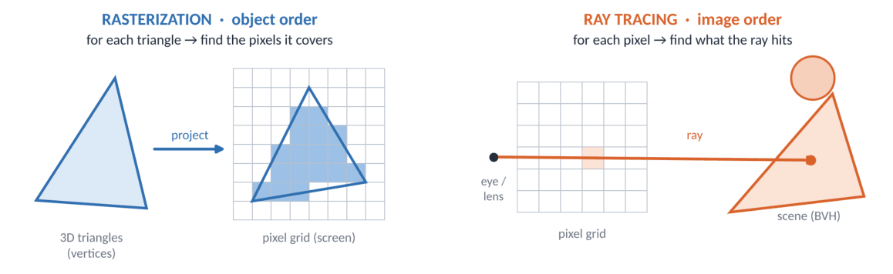
Rasterization works in object order. It takes every triangle of every object, projects its three corners onto the screen, and fills in the pixels inside the resulting 2D triangle. When two triangles land on the same pixel, a per-pixel depth value (the z-buffer) keeps the closer one. This is like a painter stamping each object onto the canvas. GPUs have dedicated hardware for exactly this, which is why a game can draw tens of millions of triangles 60 times a second.
Ray tracing works in image order. For each pixel it builds a ray from the camera through that pixel and asks: which surface does this ray hit first? It then asks further questions by shooting more rays from that point: can it see the light (shadow ray)? What is reflected towards the camera (bounce ray)? This mirrors how light really travels, only backwards, from the camera into the scene.
Both methods agree on visibility — for an opaque, pinhole camera they produce the same object in the same pixel. Where they differ is lighting. Rasterization only knows about one triangle at a time, so anything that involves other parts of the scene — shadows, reflections, light bouncing off a wall — must be added by extra passes and approximations. A ray tracer can always ask the scene another question, so those effects fall out of the same mechanism.
3Rasterization in depth
A modern rasterizer such as Unreal Engine is a pipeline of stages, each running on thousands of GPU cores in parallel. The diagram below shows the path a single frame takes; the paragraphs after it explain what happens and why each stage exists.
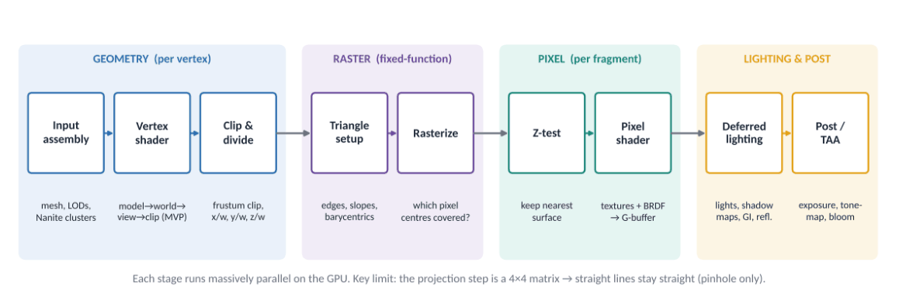
3.1Geometry: from 3D model to screen coordinates
Each object is stored as a mesh of triangles in its own coordinate system. The vertex shader transforms every vertex with a chain of matrices: model-to-world (where the object stands), world-to-view (where the camera is) and view-to-clip (the projection). The projection matrix encodes the field of view and near/far planes. After it, the GPU divides x, y and z by the fourth coordinate w — the perspective divide — which is what makes distant objects smaller.
This step is the root of the pinhole limitation. A 4×4 matrix followed by a division maps straight lines to straight lines. A fisheye lens maps straight lines to curves. No choice of matrix can do that, and the pinhole model itself breaks down at 90° from the axis, where tan θ goes to infinity. Section 8 shows what engines do about it.
3.2Rasterization and the z-buffer
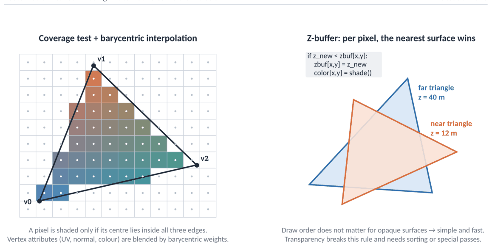
Triangle setup computes the edge equations of each projected triangle. The rasterizer then tests pixel centres: a pixel belongs to the triangle if its centre lies on the inner side of all three edges. For every covered pixel it produces a fragment with interpolated attributes (texture coordinates, normal, depth) using barycentric weights. The depth test compares the fragment's depth with the value already stored in the z-buffer and discards it if something closer is already there. Because this test is per pixel, opaque objects can be drawn in any order.
Because coverage is decided at pixel centres, edges are inherently aliased (stair-stepped). Engines fight this with anti-aliasing. Unreal relies mainly on temporal methods (TAA, and TSR in UE5): the camera is jittered by a fraction of a pixel each frame and results are blended over time. That works well for a moving game camera, but it means a single frame is not independent of the previous ones — something to remember when you reset the scene between dataset samples.
3.3Shading: materials and the G-buffer
Unreal uses deferred shading. The pixel shader does not compute lighting immediately; it writes the surface properties of the visible surface into several screen-sized textures, together called the G-buffer: base colour, normal, roughness, metallic, specular, depth, and a few more. Lighting is then computed once per pixel in a separate pass, for each light. This decouples the cost of lighting from the number of objects and makes it cheap to have many lights.
Materials follow the physically based rendering (PBR) convention: a microfacet BRDF (GGX distribution) controlled by base colour, roughness and metallic parameters. The word 'physically based' refers to the material model — energy conservation, plausible highlights. It does not mean the light transport is simulated physically; that is where the approximations live.
3.4Lighting: direct light is easy, everything else is a trick
For each pixel the lighting pass knows the surface and the light, so direct illumination is straightforward. Everything that requires knowledge of other surfaces needs extra machinery:
- Shadows — is the light blocked? Answered by shadow maps (Section 5).
- Reflections — what does a shiny car body or wet road reflect? Screen-space reflections reuse the already rendered image, so they cannot reflect anything outside the screen; reflection captures (pre-baked cube maps) fill the gaps; UE5's Lumen adds traced reflections.
- Indirect light / global illumination (GI) — light bouncing off the road into the underside of a car, or into a parking garage. UE4 relied on baked lightmaps, sky light and ambient occlusion; UE5 introduces Lumen (Section 6).
- Ambient occlusion — darkening in creases and contact areas, usually computed in screen space (SSAO).
3.5Post-processing: making it look like a camera
The lit image is in linear high-dynamic-range values. A chain of post-process effects then turns it into a displayable picture: auto-exposure (eye adaptation), bloom around bright lights, lens flare, motion blur, depth of field, a filmic tone curve, white balance and gamma. CARLA exposes many of these as camera attributes (exposure_mode, shutter_speed, iso, fstop, bloom_intensity, lens_flare_intensity, the tonemapper slope/toe/shoulder, chromatic_aberration_intensity, and a master switch enable_postprocess_effects).
These effects are designed to look pleasing to a human viewer, not to reproduce a specific automotive camera. Histogram auto-exposure, for example, adapts over several frames and makes brightness depend on history; the filmic tonemapper compresses highlights in a way your ISP does not. For dataset generation, decide explicitly: either switch effects off and apply your own camera model, or document and fix their parameters so every frame is comparable.
Each stage of the pipeline only sees its own data: a triangle in the vertex shader, a pixel in the pixel shader, the screen in post-processing. That locality is exactly what makes rasterization so parallel and fast — and exactly why global effects such as shadows and reflections need separate passes.
4Ray tracing and physically based path tracing
A path tracer solves the rendering equation by following random light paths backwards from the camera; its answers are physically grounded, and its cost is noise that falls only with the square root of the number of samples.
4.1The rendering equation: what a path tracer is solving
In 1986 James Kajiya wrote down a single equation that describes how light leaves any surface point. Every physically based renderer is an attempt to solve it.
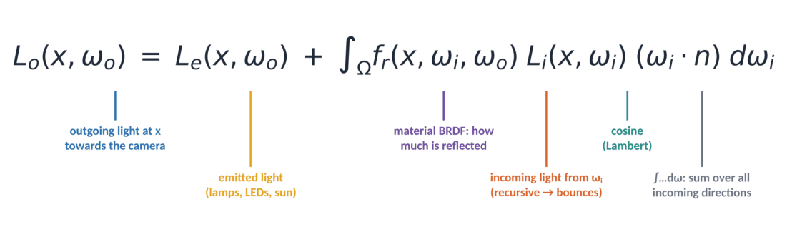
Read it from left to right: the radiance leaving point x towards the camera is the light the point emits itself (non-zero only for lamps, LEDs, the sky) plus the sum, over every direction in the hemisphere above the surface, of incoming light times the material's reflectance (the BRDF) times a cosine factor. The difficulty is that the incoming light from each direction is the outgoing light of some other surface — so the equation calls itself. There is no closed-form solution for a real scene.
4.2Path tracing: solving it by random sampling
A path tracer estimates the integral with the Monte Carlo method: instead of summing over all directions, it picks a few at random and averages. Doing this recursively produces a path from the camera, bouncing through the scene, eventually reaching a light. One path is a very noisy estimate; averaging hundreds or thousands of paths per pixel converges to the true answer.
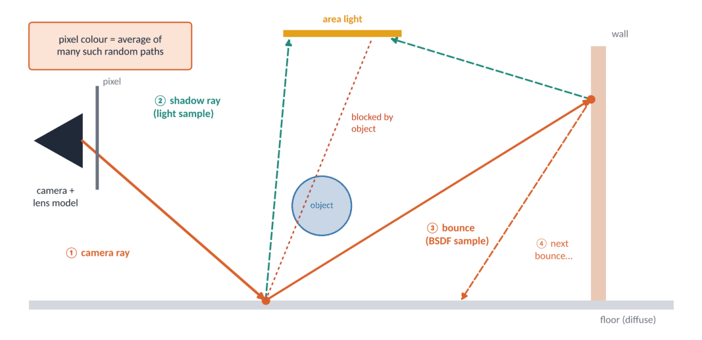
The main components, and why each one exists:
| Component | What it does | Why it is needed |
|---|---|---|
| Camera ray generator | Maps a pixel (plus a random sub-pixel offset) to a ray origin and direction | This is where the lens model lives. Any projection — pinhole, fisheye polynomial, equirectangular — is just a different function here. |
| BVH (bounding volume hierarchy) | A tree of nested boxes around the geometry | Lets each ray find its first hit in ~log(N) steps instead of testing millions of triangles. Modern GPUs (NVIDIA RT cores, AMD and Apple ray accelerators) traverse it in hardware. |
| Intersection + shading | Finds the hit point and evaluates the material (BSDF) and textures | The BSDF says how much light is reflected or transmitted from any direction to any other. |
| Next-event estimation | At every hit, sends a shadow ray to a sampled point on a light | Explicitly connecting to lights is far less noisy than waiting for a random bounce to hit a lamp. |
| Multiple importance sampling | Combines light sampling and BSDF sampling with weights | Each strategy is good in different cases (small bright lights vs. glossy surfaces); MIS keeps the best of both. |
| Russian roulette | Randomly terminates paths that carry little energy | Keeps the estimate unbiased while not wasting time on deep, dim bounces. |
| Accumulation + denoiser | Averages samples; optionally a neural denoiser (OpenImageDenoise, OptiX) | Removes residual noise; makes a few hundred samples look like many thousands. |
4.3Noise and the cost of accuracy
Monte Carlo error falls with 1/√N, where N is the number of samples per pixel. To halve the noise you need four times the samples and therefore four times the render time. The figure below was measured on the soft-shadow scene used in Section 5 and follows this law closely.
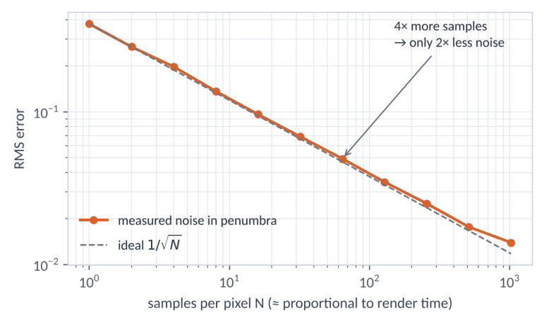
Noise is not distributed evenly. Directly lit, open areas converge fast; areas lit only indirectly (under a car, inside a garage), small bright light sources seen through glass, and caustics converge slowly. Cycles therefore offers adaptive sampling (stop early where a pixel has converged), a light tree for scenes with many lights, path guiding on the CPU, and AI denoisers.
Cycles works in RGB, not in spectral wavelengths. For most perception work this is fine, but it means it cannot reproduce effects that depend on the sensor's spectral response (for example, how a narrow-band LED or sodium lamp looks through a specific colour filter array).
A path tracer is unbiased: with enough samples it converges to the physically correct answer for the given scene and materials. A rasterizer's tricks are biased: they converge to something plausible but not necessarily to what a real camera would record. That is the essential difference to explain to customers.
5How shadows are generated
Shadows are a good lens through which to see the whole difference between the two families. A shadow is simply the answer to one question: can this surface point see the light? A ray tracer asks that question directly. A rasterizer cannot, because when it shades a pixel it has no access to the rest of the scene — so it prepares the answer in advance.
5.1Shadow mapping (rasterization)
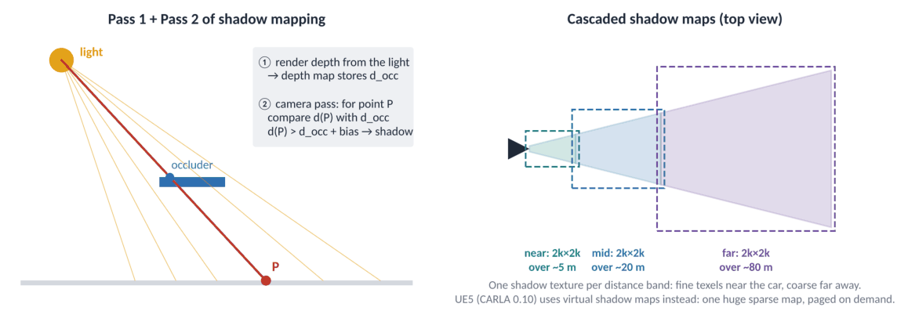
Shadow mapping, introduced by Lance Williams in 1978, works in two passes. First the scene is rendered from the light's point of view, storing only depth — the distance to the nearest occluder for each texel. Then, during normal rendering, each visible point is transformed into the light's view and its distance to the light is compared with the stored value. If the point is farther away than the stored occluder (plus a small bias), something blocks the light: it is in shadow.
It is fast and fully parallel, but the shadow is only as good as that depth texture, which leads to a family of well-known artefacts:
- Aliasing / blockiness — one shadow-map texel may cover many screen pixels, especially far from the camera or on surfaces seen at grazing angles. Shadow edges become jagged.
- Shadow acne — a surface wrongly shadows itself because of limited depth precision; fixed with a depth bias…
- …which causes peter-panning: with too much bias the shadow detaches from the object's base. Contact shadows between tyre and road are exactly where this shows.
- Uniform softness — percentage-closer filtering (PCF) blurs the edge by a fixed amount. Real penumbrae are sharp where the occluder touches the ground and widen with distance; PCSS approximates this.
- Limited range and resolution budget — the map can only cover so much area at a useful resolution.
Cascaded shadow maps address the range problem for the sun: several maps of equal resolution cover nested distance bands, so texels are dense near the camera and coarse far away. UE4 combines them with distance-field shadows for distant objects. UE5 introduces virtual shadow maps: one very large (16k × 16k) sparse map per light, of which only the pages actually needed for the current view are rendered. This removes most resolution problems, but the method is still a depth comparison with a filtered, approximate penumbra.
5.2Ray-traced shadows
In a path tracer, the shadow test is a shadow ray: from the surface point, shoot a ray to a randomly chosen point on the light and check whether anything is in the way. Because the light has a real size, different sample points are visible to different degrees from points near the shadow edge. The penumbra, its correct width, the sharp contact shadow and the way it widens with distance all emerge automatically. The sun is no exception: it subtends about 0.53°, which determines how soft the shadow of a lamp post is at 10 m. The only cost is noise, which more samples or a denoiser remove.
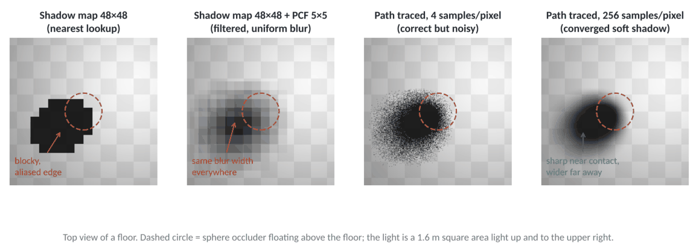
Indirect shadowing matters as well. Under a car, the ground is not black: it is lit by skylight and by light bounced off the surrounding road. A path tracer computes this; a rasterizer approximates it with ambient occlusion and GI systems such as Lumen. Getting it wrong changes the contrast at exactly the image region that surround-view and parking functions look at.
Shadows are not a cosmetic detail for camera perception:
- The ego vehicle's own shadow appears in all four surround-view cameras and in the stitched top view; its shape and softness change with sun position.
- Long shadows of poles, kerbs and other cars lying across or along parking lines are a classic source of false line detections in parking-slot detection.
- Low sun produces high-contrast scenes where shadow regions sit near the noise floor of the sensor — HDR and tone mapping matter as much as the shadow geometry.
- At night, multiple street lamps and headlights produce several overlapping, soft shadows; shadow-map budgets (number of shadow-casting lights) can silently drop some of them.
6Pros, cons and the hybrid middle ground
Rasterization wins on speed and determinism, path tracing on physical correctness and arbitrary lenses; modern engines increasingly mix the two.
| Rasterization (UE / CARLA) | Path tracing (Cycles) | |
|---|---|---|
| Speed | Real-time: milliseconds per frame per camera | Seconds to minutes per frame |
| Determinism | Repeatable, but temporal effects (TAA, auto-exposure, motion blur) depend on previous frames | Statistically repeatable; fix the random seed for bit-identical output |
| Camera models | Pinhole only; fisheye needs cube maps or warping | Any lens model, including >180° fisheye and custom polynomials |
| Shadows | Shadow maps: bias, resolution limits, approximate softness | Shadow rays: correct penumbra, contact shadows, many lights |
| Indirect light, reflections | Approximations (SSR, AO, Lumen); screen-space effects miss off-screen objects | Computed for all bounces; mirrors, glass and wet roads behave correctly |
| Image artefacts | Aliasing, temporal ghosting, light leaks, popping LODs | Noise (Monte Carlo), fireflies, denoiser smoothing |
| Scale | Huge worlds, traffic, many sensors, closed loop | Scenes you build and control; batch rendering on a GPU farm |
| Ground-truth buffers | Cheap: depth, segmentation, instance IDs, optical flow, normals | Render passes (AOVs): depth, normals, object/material index, motion vectors, Cryptomatte |
6.1The line between the two is blurring
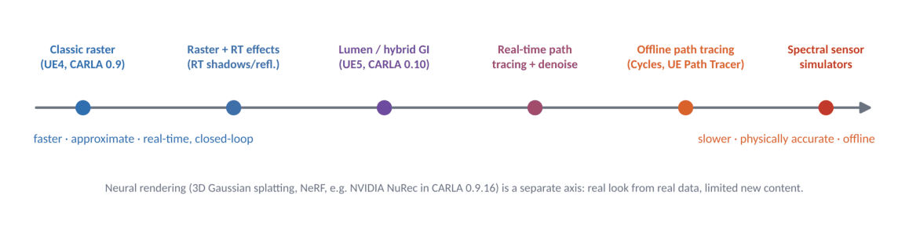
Real-time engines increasingly mix the two. Since GPUs gained ray-tracing hardware (NVIDIA RTX, 2018), engines rasterize the primary visibility and use rays for selected effects: shadows, reflections, ambient occlusion. Techniques such as ReSTIR resample light paths across pixels and frames to make real-time path tracing feasible with heavy denoising.
Lumen, the global illumination system of UE5 used by CARLA 0.10, is a good example of the hybrid approach. It first tries cheap screen traces against the depth buffer; if a ray leaves the screen it continues against simplified scene representations — signed distance fields of meshes and a surface cache that stores pre-lit surface patches — or, if enabled, against the real triangles using hardware ray tracing. The result is dynamic GI and reflections at interactive rates, but it is an approximation with its own artefacts: light leaking through thin walls, delayed reaction to sudden lighting changes, and less accuracy for small or thin objects.
At the other end, Unreal also contains an offline Path Tracer mode, and specialised automotive sensor simulators add spectral rendering and calibrated camera models. A separate, fast-moving direction is neural rendering (NeRFs, 3D Gaussian splatting): scenes are reconstructed from real drives and re-rendered from new viewpoints. CARLA 0.9.16 integrates NVIDIA NuRec for this. Neural reconstructions look real because they are real, but editing content, lighting or camera models far from the recorded trajectory remains limited.
7Blender Cycles vs. CARLA (UE4 / UE5) in practice
CARLA is an open-source driving simulator built on Unreal Engine. Its long-standing 0.9.x line uses UE 4.26 (0.9.16 was released in September 2025); the 0.10 line, released in December 2024, migrated to UE 5.5 with Lumen, Nanite and Chaos physics, and the CARLA team recommends at least 16 GB of VRAM for it. Blender is an open-source 3D suite; Cycles is its production path tracer, running on CPU and on NVIDIA (CUDA/OptiX), AMD (HIP), Apple (Metal) and Intel (oneAPI) GPUs.
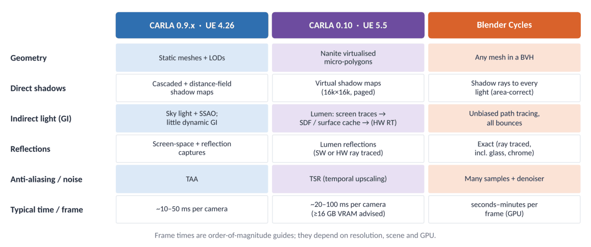
| Aspect | CARLA (UE4 / UE5) | Blender Cycles |
|---|---|---|
| Primary purpose | Closed-loop driving simulation: maps, traffic, pedestrians, vehicle physics, scenario control, ROS 2 bridge | Producing images of a 3D scene; animation and VFX |
| Time model | Simulation clock; synchronous mode with fixed time step lets all sensors capture the same world state | Frame-by-frame offline rendering; animation keyframes or scripted changes |
| Scene content | Ready-made towns, vehicles, walkers; OpenDRIVE road network; asset import is work | You model or import everything; full control of every object, material and light |
| Automation | Python client API (carla module) over RPC; blueprints and attributes per sensor | Python API (bpy) inside Blender; headless batch rendering from the command line |
| Camera models | Pinhole RGB/depth/segmentation; lens-distortion post-process; wide-angle camera with fisheye models in current docs (see Section 8) | Perspective, orthographic and panoramic: equirectangular, fisheye equidistant/equisolid, fisheye lens polynomial, and more |
| Ground truth | Depth, semantic + instance segmentation, optical flow, normals, bounding boxes, LiDAR, radar, GNSS/IMU | Render passes: depth, normals, vector (motion), object/material index, Cryptomatte, albedo, light passes |
| Output format | 8-bit BGRA after post-processing (RGB); depth encoded in 24 bits | Linear float (OpenEXR) or display-referred PNG; multilayer EXR for passes |
| Coordinates | Unreal: x forward, y right, z up (left-handed), metres in the API | Right-handed, z up; the camera looks along its local −z with +y up |
| Licence | Code MIT; assets under separate licence | GPL for Blender; your renders are yours |
Practical pitfalls when moving between the two:
- Coordinate frames. Unreal is left-handed (x forward, y right, z up); Blender is right-handed; OpenCV calibration is x right, y down, z forward. Write one tested conversion function per pair and never convert 'by eye'. A mirrored image is the classic symptom.
- Depth definition. 'Depth' can mean planar z (distance along the optical axis) or range (Euclidean distance along the ray). For a fisheye beyond 90°, planar z is not even defined. Check which one each tool writes before using it as ground truth.
- Colour space. CARLA images are tone-mapped and gamma-encoded; Cycles EXR is linear scene radiance. Do not mix them in a dataset without a common camera model.
- Labels at edges. Anti-aliasing blends neighbouring objects. In Cycles, render ID passes with filtering disabled (or use Cryptomatte); in CARLA, avoid resampling label images with bilinear interpolation.
Synchronisation matters for surround view: four cameras must capture the same simulation instant. In CARLA, use synchronous mode with a fixed time step and match frames by frame number. Real cameras also have exposure time and rolling shutter; neither renderer models rolling shutter out of the box, which becomes visible on fast lateral motion close to the vehicle.
8Simulating fisheye cameras
Surround-view and many parking cameras use fisheye lenses with 180–200° field of view. These lenses are not 'distorted pinholes'; they follow a different projection law. Calibration tools usually describe them with the Kannala–Brandt (KB) model, also used by OpenCV's fisheye module:
r = f · θd, θd = θ (1 + k1θ2 + k2θ4 + k3θ6 + k4θ8)where θ is the angle between the incoming ray and the optical axis, r is the distance of the image point from the principal point, and f is the focal length in pixels. The polynomial lets one model fit almost any real lens. The classic analytic models are special cases or neighbours of it.
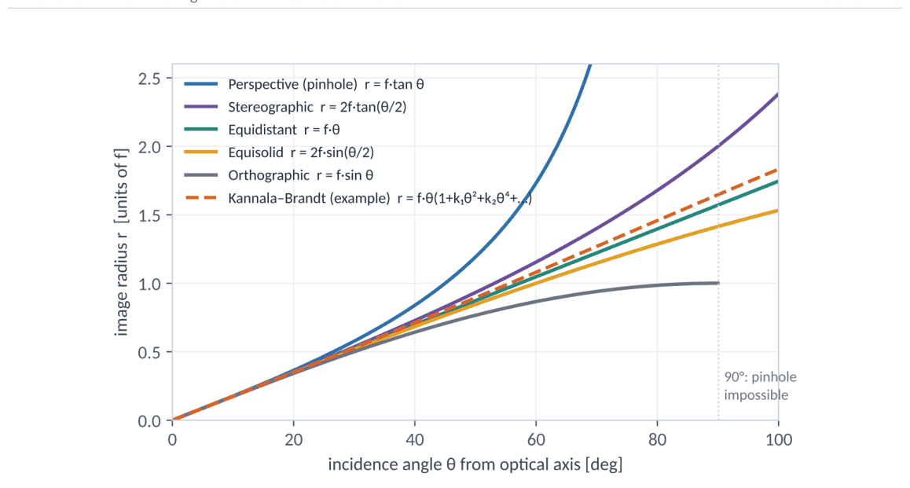
8.1Why a rasterizer cannot render a fisheye directly
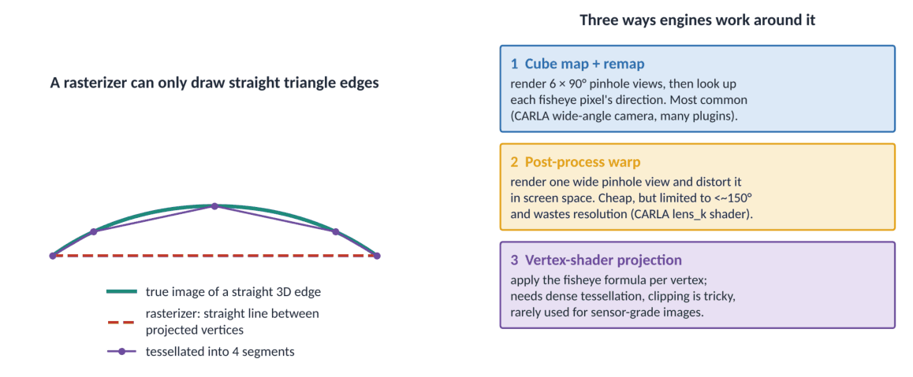
Section 3 explained that the GPU projection is a matrix, so straight edges stay straight. You can warp the image afterwards or project vertices non-linearly, but the robust solution used by practically every engine is the cube map: render six 90° pinhole images that together cover every direction, then for each fisheye pixel compute its ray direction with the lens model, find the cube face and position that direction falls on, and sample the colour there.
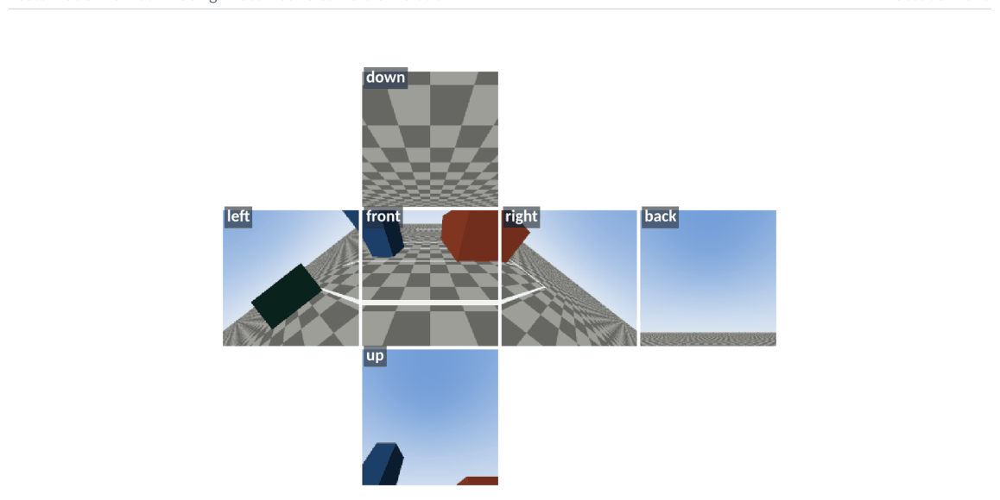
8.2Fisheye in CARLA
CARLA offers two different mechanisms, which are often confused:
- Lens-distortion post-process (all camera sensors, since 0.9.7). Attributes
lens_k, lens_kcube, lens_circle_falloff, lens_circle_multiplier, lens_x_size, lens_y_sizedrive a screen-space shader that warps the rendered pinhole image with a simple radial polynomial and can darken the corners. It is useful for visual realism, but it is not a calibrated lens model: the field of view is limited by the underlying pinhole render, resolution at the edges is stretched, and the parameters do not map to a KB calibration. - Wide-angle cameras (current development documentation). The latest CARLA sensor reference describes blueprints
sensor.camera.rgb.wide_angle_lensand matching depth, semantic and instance-segmentation variants. Thecamera_modelattribute selects perspective, stereographic, equidistant, equisolid, orthographic or kannala-brandt, the latter documented as matching OpenCV's implementation, with four coefficientsk0…k3(OpenCV calls them k1…k4), plusfov, an FOV mask with soft edge, and an equirectangular mode. It is built on cube-map capture — CARLA's source includes a cube scene-capture component — so the correctness considerations below apply. This sensor does not appear in the 0.9.16 changelog, so confirm that your CARLA build actually contains it.
The documented wide-angle attributes contain no principal-point offset, no separate fx/fy and no tangential terms; intrinsics are derived from image size and fov. A real calibration with an off-centre principal point (often several pixels) therefore cannot be reproduced exactly from attributes alone. Options: render larger and crop/shift, apply a final pixel-exact remap from an ideal model to your calibration, or extend the shader.
8.3Fisheye in Blender Cycles
In Cycles a camera of type Panoramic offers several fisheye types. Fisheye Equidistant and Fisheye Equisolid implement the analytic models; the Blender manual notes that equidistant ignores sensor size, while equisolid is closer to most real lenses. For calibrated cameras the right choice is Fisheye Lens Polynomial: it maps the radius r of a point on the sensor (in millimetres) to the ray angle with a 4th-order polynomial, θ = k0 + k1·r + k2·r² + k3·r³ + k4·r⁴. Because this happens in the camera ray generator, every pixel gets its own exact ray. There is no intermediate image, no resampling and no seam.
Two details matter when you convert a KB calibration:
- The direction of the mapping is reversed. KB maps angle → radius; Cycles wants radius → angle. You cannot copy the coefficients; you fit the inverse. Sample θ densely up to the half-FOV, compute r with KB, convert pixels to millimetres with the pixel pitch, and least-squares fit θ(r).
- Sign convention. In the Cycles kernel the angle is computed as θ = −(k0 + k1·r + …), which is why Blender's default coefficients are negative. Negate your fitted coefficients.
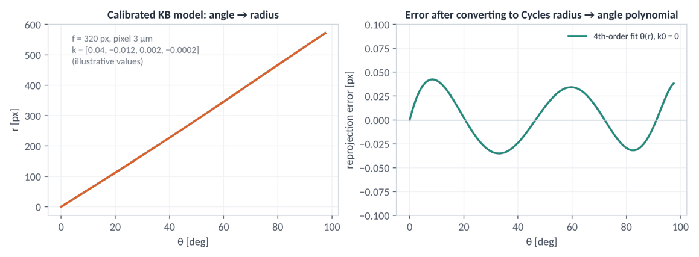
import numpy as np, bpy
f_px, pitch_mm, width_px = 320.0, 0.003, 1280 # calibration + sensor datasheet
k1, k2, k3, k4 = 0.04, -0.012, 0.002, -0.0002 # OpenCV fisheye (KB) coefficients
half_fov = np.radians(97.5)
th = np.linspace(0.0, half_fov, 2000)
r_mm = f_px * th * (1 + k1*th**2 + k2*th**4 + k3*th**6 + k4*th**8) * pitch_mm
A = np.stack([r_mm**i for i in range(1, 5)], axis=1) # fit theta(r), k0 = 0
c = np.linalg.lstsq(A, th, rcond=None)[0]
cam = bpy.data.objects["FisheyeCam"].data
cam.type = 'PANO'
cam.panorama_type = 'FISHEYE_LENS_POLYNOMIAL' # Blender 4.x+; in 3.x under cam.cycles
cam.fisheye_polynomial_k0 = 0.0
(cam.fisheye_polynomial_k1, cam.fisheye_polynomial_k2,
cam.fisheye_polynomial_k3, cam.fisheye_polynomial_k4) = (-c).tolist() # theta = -(poly)
cam.fisheye_fov = 2 * half_fov
cam.sensor_fit = 'HORIZONTAL'
cam.sensor_width = width_px * pitch_mm # same mm scale as in the fit
# Then verify: project known 3D points with your KB model, overlay on a test render.The remaining gaps are the same as in CARLA, but smaller: an off-centre principal point needs either a lens shift (verify that your Blender version applies it to panoramic cameras) or a larger render plus crop; and lens effects beyond geometry — PSF/MTF, vignetting, flare, chromatic aberration — are not part of the camera model and must be added separately.
9How correct is each fisheye approach?
To make the differences tangible, the figure below renders the same synthetic scene with both methods: a 190° equidistant fisheye, 1 m above a checkered floor with parking lines, pitched down like a side camera. All images are computed by the small ray tracer used for this document.
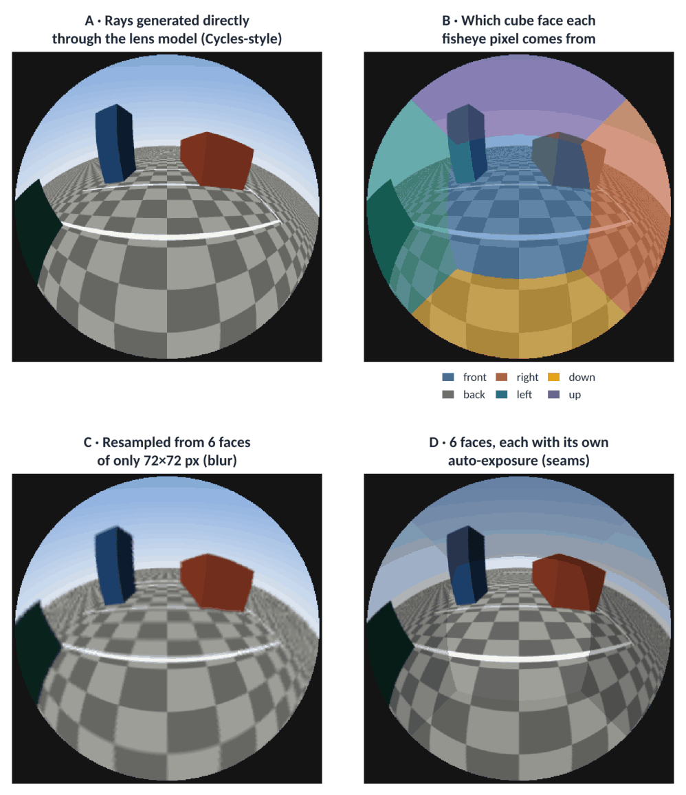
9.1Geometric correctness
Both approaches can be geometrically exact in the sense that the direction assigned to each fisheye pixel follows the lens model. In the cube-map approach the error comes from the resampling, not from the model: each fisheye pixel is interpolated from the four nearest texels of a face. If those texels are coarser than the fisheye pixel, the image is blurred; if they are much finer without filtering, it aliases. The required face resolution follows directly from the angular sampling density:
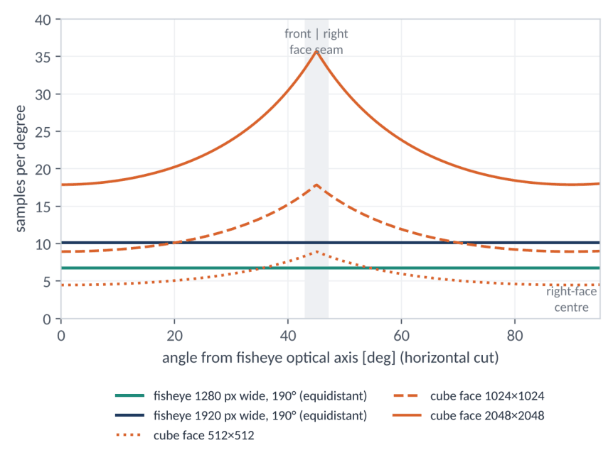
For an equidistant fisheye the focal length in pixels is f = (W/2)/θmax. Since the cube face is coarsest at its centre with N/2 texels per radian, the face size must satisfy N ≥ 2f. A 1920-px-wide 190° fisheye has f ≈ 580 px, so N ≥ 1160 — in practice 1536 or 2048 with filtering. Six faces of 2048² are about 25 million pixels rendered for a 2-megapixel output: roughly 10× the work of the final image (five faces suffice for FOVs below ~250°, saving one).
9.2Photometric and label correctness
| Effect | Cube map in a rasterizer | Direct rays in a path tracer |
|---|---|---|
| Exposure | Auto-exposure computed per face → brightness seams; must use one shared, fixed exposure | One exposure for the whole image |
| Screen-space effects | SSR, SSAO, bloom, lens flare, TAA, motion blur are per face; they break or duplicate across face edges | No screen-space effects; reflections and AO are traced |
| Lumen / screen traces | Screen traces see only the current face; more fallback to coarser scene representations near edges | Not applicable |
| Ground-truth labels | IDs and depth bilinearly blended at object edges unless nearest-sampled; depth must be converted from per-face planar z to range | Per-pixel first hit; set filter width to zero or use Cryptomatte for clean IDs |
| Vignetting / relative illumination | Not modelled (post-process approximation only) | Not modelled by the camera; add in post |
| Motion blur, rolling shutter | Per-face motion blur; no rolling shutter | Shutter-interval motion blur; rolling shutter option for perspective cameras in Cycles; verify for panoramic |
| Cost | ≈6 renders per camera per frame; still real-time capable | Seconds per frame per camera |
9.3A verification procedure you can run on either tool
- Reprojection test. Place known 3D points (checkerboard corners, small spheres) at many angles including > 90°. Project them with your own KB implementation and overlay on the render. Target: mean error well below 0.5 px, no systematic radial trend.
- Straight-line test. Long straight edges (parking lines, kerbs) should match the curves predicted by the model, including near the image border where errors are largest.
- Seam test. Pan a uniform, textured scene through the image; look for brightness or sharpness steps along cube-face boundaries (at 45° and 135° from the axis for a forward-facing cube).
- Label test. Histogram the IDs in segmentation images; any ID that is not a real object indicates interpolation. Compare depth along a ray with the analytic distance.
- Cross-check. Render one static frame in Cycles with the converted polynomial and in CARLA with the same intrinsics and extrinsics. Edge-map differences show where the two disagree.
Geometry can be made essentially exact in both tools. What separates them is how many other things break when you stitch six pinhole views, and how much effort it takes to prove that they did not. In Cycles, the fisheye is native; in a rasterizer, it is a post-process that needs its own validation.
10What the renderer does not give you: the camera
A renderer — rasterizer or path tracer — computes how much light arrives from each direction. A real automotive camera then passes that light through optics, a sensor and an image signal processor (ISP). Many of the features that make real images hard for perception are created in those later stages.
| Effect | Why it matters for perception | How to add it |
|---|---|---|
| Sensor noise (shot, read, dark, FPN) | Dominates at night and in shadows; detectors trained on clean images degrade | Physically based noise model applied to linear radiance (Cycles EXR) before the ISP |
| HDR and tone mapping | Automotive sensors capture 120 dB+; tone mapping decides what is visible in tunnel exits and low sun | Render linear float, simulate multi-exposure or companding, then your ISP tone curve |
| LED flicker (PWM) | Traffic lights, signs and car lamps can appear off or banded in a frame | Model the light's duty cycle against the exposure window (time-sampled emission) |
| Rolling shutter | Skews fast-moving or close objects; matters for distance estimation | Render several time slices and assemble rows, or use a renderer that supports it |
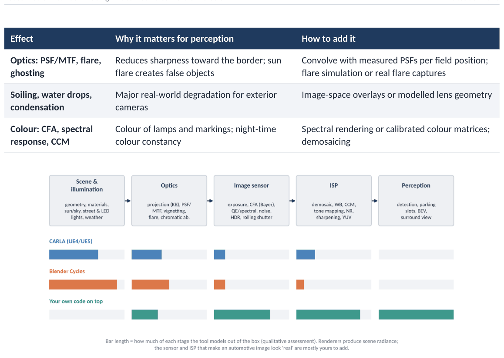
A useful rule of thumb when budgeting simulation work: first get the geometry right (lens, mounting, synchronisation), then the camera (noise, HDR, ISP), and only then invest in light-transport accuracy (path tracing, Lumen settings). A perfectly path-traced image fed through no sensor model is still a long way from a real fisheye frame at dusk.
Finally, simulation evidence needs to be credible. Common practice is to measure the sim-to-real gap with the function itself — the same detector's KPIs on matched real and synthetic scenes — rather than relying on visual impression alone, and to document the validity range of each model (for example 'validated for daylight, dry road, ≥ 2 lux').
11Which tool for which job
The right renderer depends on the question: geometry and lens design, perception training data, or closed-loop testing each favour a different tool.
| Task | Recommended | Reason |
|---|---|---|
| Design of a 4-camera surround-view rig: coverage, overlap, body occlusion, px/m on the ground | Cycles (or pure geometry) | Exact lens model and vehicle geometry matter, not traffic |
| Validation of a calibration or projection code path | Cycles | Ray-per-pixel output is a clean geometric reference |
| Effect of a specific light (LED strip, puddle lamp) on the image | Cycles | Area lights, real light falloff, reflections on paint and wet ground |
| Large datasets with traffic, pedestrians, weather variety | CARLA | Volume, automatic labels, scenario control |
| Closed-loop parking or driving function test | CARLA | Real-time vehicle dynamics and sensors in sync |
| Fisheye datasets at volume | CARLA wide-angle camera, validated against Cycles | Use Cycles to verify geometry and seams once, then scale with CARLA |
| SOTIF edge-case lighting (low sun, glare, night) | Path tracer + camera model; CARLA for scenario context | Lighting credibility is the argument |
A pragmatic hybrid workflow that many teams converge on:
- Fix the camera definition once — intrinsics (KB), extrinsics, exposure model — in one tool-independent file.
- Use Cycles to create reference renders of a few static scenes and to validate the fisheye geometry, seams and label quality of the real-time pipeline.
- Use CARLA for scenarios and volume, with post-processing effects disabled or fixed.
- Apply the same sensor + ISP model to both outputs.
- Measure the sim-to-real gap with the perception function on matched real data.
QSelf-check questions
Short model answers first, then questions that check understanding with why and what if.
Q.1Core questions
Why don't we just path trace everything?Basic
Cost. A path-traced frame takes seconds to minutes; a test campaign needs millions of frames, often in closed loop at real-time rate. Path tracing is used where its accuracy changes the conclusion — lighting edge cases, lens validation — and rasterization everywhere else.
Is Unreal Engine 5 with Lumen 'physically correct'?Basic
It is physically based: materials and lights use physical units and models, and Lumen computes dynamic indirect light. But it remains an approximation tuned for real time — screen-space traces, simplified scene representations, temporal accumulation. It is far closer to reality than UE4, but it does not converge to the exact answer the way a path tracer does.
Is the CARLA fisheye correct?Basic
The projection can be correct if the model and intrinsics match and the cube faces are large enough. What needs checking is everything around it: exposure and effects per face, label interpolation, depth definition and principal point. Validate once against a ray-traced reference and document the result.
Why do the shadows look different in the two tools?Basic
Cycles traces shadow rays to lights with real size, so penumbrae have the right width and contact shadows are sharp. Unreal uses shadow maps with filtering and bias, so softness is approximate and fine contact shadows can be lost or detached.
Does a more realistic renderer automatically give better training data?Basic
Not automatically. Variety, label quality and a realistic camera model often matter more than light-transport accuracy. Realism should be targeted at the effects your function is sensitive to.
What about neural rendering?Basic
Gaussian splatting and NeRF-style reconstructions (e.g. NuRec in CARLA 0.9.16) give real appearance from recorded drives and are excellent for re-simulation near the original trajectory. They are weaker for new content, new lighting and very different camera models.
Rasterization — “Projects every triangle onto the screen and keeps the closest. Fast, deterministic, pinhole-only; light effects are separate approximations.”
Path tracing — “Follows light paths backwards from each pixel with random sampling. Physically correct lighting and any lens model; slow, and noisy until it converges.”
Shadow map — “A depth photo taken from the light; anything farther than that photo is in shadow.”
Cube-map fisheye — “Six normal cameras glued into a sphere and re-projected through the fisheye formula.”
Lumen — “UE5's real-time approximation of bounced light, using screen data, simplified geometry and optionally hardware ray tracing.”
Q.2Why and what if
Why can a rasterizer not render a 190° fisheye image in one pass?Why
Rasterization maps vertices through a 4×4 projective matrix, which keeps straight lines straight and cannot represent a field of view of 180° or more. A fisheye maps directions to pixels non-linearly, so the image has to be assembled from several pinhole views (a cube map) and re-projected, or the vertices bent in a shader, which breaks for large triangles.
What if the cube-map faces used for a simulated fisheye have too low a resolution?What if
Near the image centre the fisheye magnifies the cube map, so the result is blurry; at face borders resampling and different mip levels leave visible seams. The face resolution must be chosen from the fisheye's pixel density at its centre, not from the output size.
Why does path-tracing noise fall so slowly with render time?Why
Each pixel is a Monte Carlo estimate, and the standard deviation of a mean of N independent samples falls as 1/√N. Halving the noise needs four times as many samples; denoisers and importance sampling are how renderers escape this cost.
What if a shadow map's resolution is too low for a large outdoor scene?What if
Each shadow-map texel covers a large area on the ground, so shadow edges become blocky or shimmer when the camera moves, and small objects cast no shadow at all. Cascaded or virtual shadow maps spend resolution near the camera where it is needed.
Why do soft shadows come out correctly in a path tracer without a special technique?Why
A path tracer samples points on area lights, so each shading point sees the fraction of the light that is unoccluded. The penumbra is simply that fraction varying across the surface; a rasterizer must approximate it by filtering shadow-map lookups.
What if a perception network is trained only on rasterized images and tested on real cameras?What if
It may learn cues that exist only in the renderer: perfect edges, missing noise, approximate reflections and unrealistic shadows. The gap shows up as lower recall on real data. Domain randomisation, sensor-noise models and a share of real or path-traced data narrow it, and the remaining gap must be measured on real images.
Why is a deterministic renderer valuable for regression testing?Why
The same scene and seed give the same image, so a change in the perception output can be traced to a code change rather than to sampling noise. A path tracer with random sampling needs fixed seeds or statistical comparisons to be used the same way.
What if the simulated camera ignores exposure, motion blur and rolling shutter?What if
The renderer delivers an ideal radiance image that no real camera produces. Fast motion, flicker and low-light scenes then look cleaner than reality, so tests pass in simulation and fail on the road. A camera model after rendering adds exposure, noise, blur, rolling shutter and the ISP.
Why does UE5's Lumen not make CARLA images physically correct?Why
Lumen approximates indirect light with screen-space data, simplified scene representations and limited ray budgets to stay real-time. It looks plausible, but the light transport is not unbiased, so radiometric values cannot be trusted as measurements.
What if the fisheye model in the simulator differs slightly from the calibrated lens?What if
Pixels land a few pixels away from where the real camera would put them, growing towards the image border. Surround-view stitching, distance estimates and labelled boxes then disagree with real data. Verify by projecting known 3D points through both models and comparing pixel errors across the field of view.
Why can ground-truth labels from a simulator still be wrong for fisheye images?Why
Labels such as segmentation and depth are rendered through the same re-projection as the colour image; if they are computed per cube face or with different filtering, their edges do not match the colour image exactly. Check that every output channel uses the same lens mapping.
What if a scene contains many glass and chrome surfaces?What if
A rasterizer relies on reflection probes and screen-space reflections, which miss objects outside the view and give wrong refractions. A path tracer handles them correctly but needs many more samples to converge, because caustic and specular paths are hard to sample.
GGlossary
- AOV / render pass
- An extra output image from a renderer, such as depth, normals or object IDs.
- BRDF / BSDF
- Function describing how a material reflects (BRDF) or reflects and transmits (BSDF) light from one direction to another.
- BVH
- Bounding volume hierarchy: a tree of boxes that accelerates ray–scene intersection.
- Cube map
- Six 90° perspective images covering all directions around a point.
- Deferred shading
- Rasterization technique that stores surface properties in a G-buffer and computes lighting in a separate pass.
- Denoiser
- Filter, often a neural network, that removes Monte Carlo noise from a path-traced image.
- GI
- Global illumination: light that reaches a surface after bouncing off other surfaces.
- Kannala–Brandt (KB)
- Generic fisheye model r = f·θ(1 + k1θ² + k2θ⁴ + …), used by OpenCV's fisheye module.
- Lumen
- Unreal Engine 5's dynamic global illumination and reflection system.
- Monte Carlo
- Estimating an integral by averaging random samples; error falls as 1/√N.
- Nanite
- UE5's virtualised geometry system that streams and rasterizes very dense meshes efficiently.
- PBR
- Physically based rendering: material and light models that respect physical principles such as energy conservation.
- PCF / PCSS
- Percentage-closer filtering / soft shadows: methods to soften shadow-map edges.
- Shadow acne / peter-panning
- Self-shadowing artefacts from limited depth precision, and the detached shadows caused by over-correcting with bias.
- SSR / SSAO
- Screen-space reflections / ambient occlusion: approximations using only the rendered screen.
- TAA / TSR
- Temporal anti-aliasing / temporal super resolution: accumulate jittered frames over time.
- Virtual shadow map
- UE5 technique: very large sparse shadow map with pages rendered on demand.
- Z-buffer
- Per-pixel depth memory that keeps the closest surface during rasterization.
RFurther reading
- CARLA documentation — Sensors reference (latest), incl. RGB camera attributes, lens distortion and wide-angle cameras: carla.
readthedocs. io/ en/ latest/ ref_ sensors/ - CARLA blog — CARLA 0.10.0 release with Unreal Engine 5.5 (19 Dec 2024): carla.
org/ 2024/ 12/ 19/ release- 0. 10. 0 - CARLA blog — CARLA 0.9.16 release (16 Sep 2025): carla.
org/ 2025/ 09/ 16/ release- 0. 9. 16 - CARLA CHANGELOG (ue4-dev branch): github.
com/ carla- simulator/ carla - CARLA Doxygen — USceneCaptureComponentCube_
CARLA: carla.org/Doxygen - Blender Manual — Cycles cameras (panoramic, fisheye, lens polynomial): docs.
blender. org/ manual/ en/ latest/ render/ cycles/ object_ settings/ cameras. html - Blender commit 24e0165 — 'Cycles: add Fisheye Lens Polynomial camera model' (kernel and helper code): developer.
blender. org/ rB24e0165 - J. Kannala, S. Brandt — A Generic Camera Model and Calibration Method for Conventional, Wide-Angle, and Fish-Eye Lenses, IEEE TPAMI 2006.
- OpenCV — Fisheye camera model (calib3d fisheye module) documentation.
- J. Kajiya — The Rendering Equation, SIGGRAPH 1986.
- L. Williams — Casting Curved Shadows on Curved Surfaces, SIGGRAPH 1978 (shadow mapping).
- M. Pharr, W. Jakob, G. Humphreys — Physically Based Rendering: From Theory to Implementation, 4th ed. (free online at pbr-book.org).
- Epic Games — Unreal Engine documentation: Lumen Technical Details; Virtual Shadow Maps.
- ISO 21448:2022 — Road vehicles — Safety of the intended functionality.
All diagrams and figures in this chapter were generated for it. Figures 6, 8, 13, 14, 15 and 16 contain images and measurements computed with small numerical renderers, not illustrations. Frame times and tool-coverage bars are indicative assessments.